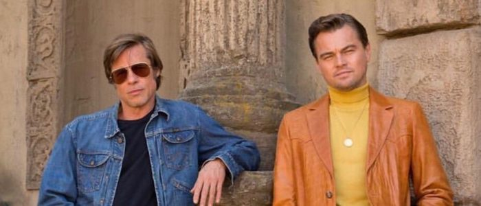

Once upon a time in Hollywood
Quentin Tarantino's 9th movie is just around the corner, expecting to be released during July 2019. Once Upon a Time in Hollywood is an mystery crime film centered on the Manson Family murders. The movie stars Brad Pitt, Leonardo da Vinci, Margot Robbie and several other high-ranking Hollywood actors.

What we know this far:
After months of speculation about who Tarantino would cast as Charles Manson, the cult leader who inspired the horrific murders that serve as a backdrop for Once Upon a Time in Hollywood, the actor has finally been identified.
According to The Wrap, Justified actor Damon Herriman (pictured) will portray Manson in the film. Best known for his role on the aforementioned FX series, Herriman also earned praise for his performances in the Australian films The Little Death and Down Under.
The news of Herriman’s casting was accompanied by several other casting announcements, with Empire actress Rumer Willis playing British actress Joanna Pettet, Dreama Walker playing actress and singer Connie Stevens, and Costa Ronin (The Americans) playing Polish actor Voytek Frykowski. Margaret Qualley, Victoria Pedretti, and Madisen Beaty were also cast in the film.
Zawierucha will portray real-world filmmaker Roman Polanski, according to The Hollywood Reporter. The controversial, Oscar-winning director of The Pianist and Rosemary’s Baby, Polanski was married to Sharon Tate when she was murdered by Manson’s cult of followers. Years later, Polanski charged with drugging and raping a 13-year-old girl, and eventually fled the U.S. after pleading guilty to a lesser offense that would have sent him to prison.
- Source: Digital Trends
After months of speculation about who Tarantino would cast as Charles Manson, the cult leader who inspired the horrific murders that serve as a backdrop for Once Upon a Time in Hollywood, the actor has finally been identified.
According to The Wrap, Justified actor Damon Herriman (pictured) will portray Manson in the film. Best known for his role on the aforementioned FX series, Herriman also earned praise for his performances in the Australian films The Little Death and Down Under.
The news of Herriman’s casting was accompanied by several other casting announcements, with Empire actress Rumer Willis playing British actress Joanna Pettet, Dreama Walker playing actress and singer Connie Stevens, and Costa Ronin (The Americans) playing Polish actor Voytek Frykowski. Margaret Qualley, Victoria Pedretti, and Madisen Beaty were also cast in the film.
A controversial character
A flurry of casting additions in late August added actors Rafal Zawierucha, Danny Strong (Billions), and Sydney Sweeney (The Handmaid’s Tale) to the cast, with only one of the three characters they will play identified — but it’s an important one.Zawierucha will portray real-world filmmaker Roman Polanski, according to The Hollywood Reporter. The controversial, Oscar-winning director of The Pianist and Rosemary’s Baby, Polanski was married to Sharon Tate when she was murdered by Manson’s cult of followers. Years later, Polanski charged with drugging and raping a 13-year-old girl, and eventually fled the U.S. after pleading guilty to a lesser offense that would have sent him to prison.
- Source: Digital Trends